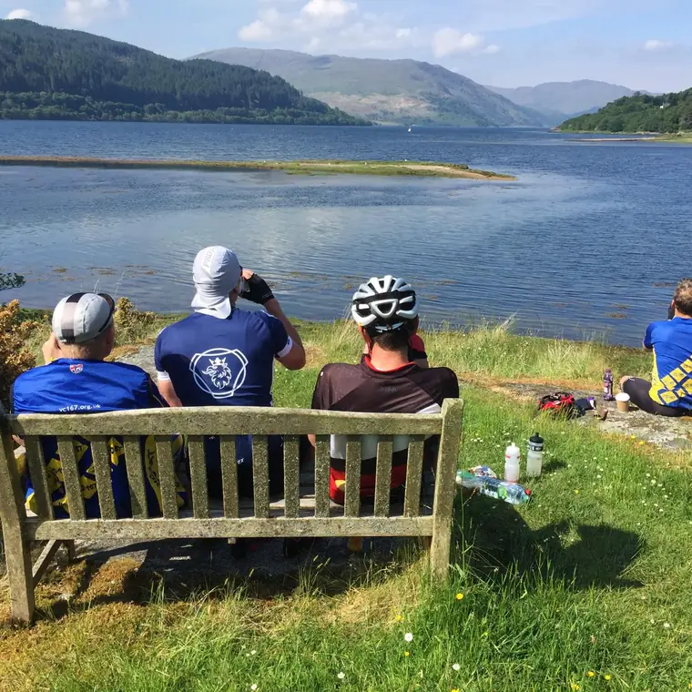

About
The Grand Tour of Scotland is a 2000km Audax event. What you’ll get is a 2000km ride around Scotland, lots of scenery, some stunning views, food at event controls and weather! Probably a great variety of weather.
It is NOT a race, it is an endurance challenge with a time limit. Riders will have just over 200 hours to complete the route. This includes any time taken to rest or eat. There will be a minimum speed limit of 10km/h.
The event is run under Audax UK and LRM (Les Randonneurs Mondiaux) rules. There are also some additional specific event rules and conditions.
It is not a race, and it is not a tour
The event is not intended for anyone who is a fast rider and intends to try and ride this as quickly as possible. If you are, and intend to do this, then you’re welcome to enter but you need to be aware that the event controls will have limited opening hours and a fast rider not stopping much may get ahead of the control opening schedule (see controls).
If you do get ahead of the control opening times then you’re on your own and you have two choices: fend for yourself, or slow down and wait until the controls open. It’s also not a tour, it’s an Audax, and there is a minimum speed limit of 10kph which includes all time off the bike, stopping, eating or resting.
Self sufficiency and support
Riders are expected to be self sufficient but due to the remote and exposed nature of the route there will be a number of event controls where riders can rest and sleep, and where we’ll also offer some limited food options. Generally the infrastructure cannot cope unless we did this and even then, outside of 9–5 hours, you will struggle to find anything. There are some other controls where there are no event facilities – more information about these will be sent in final details. There will be a limited bag drop service to some of the controls, see the FAQ.
Remote riding
You need to be aware that most of the route is in very remote areas. There are very limited facilities for other accommodation and food; any commercial options are likely to be very busy and often relatively expensive. You are, of course, very welcome to book other accommodation in hotels, hostels or B&Bs along the route and eat at cafes, shops or other places.
You will need to make sure your bike is in very good condition and ready for 2000km. It’s a long, tough ride and there are very few bike shops or repair facilities along the route.
More information
See the FAQ and the other sections of this site for more detail. Event details are provisional until final information is issued to riders.
